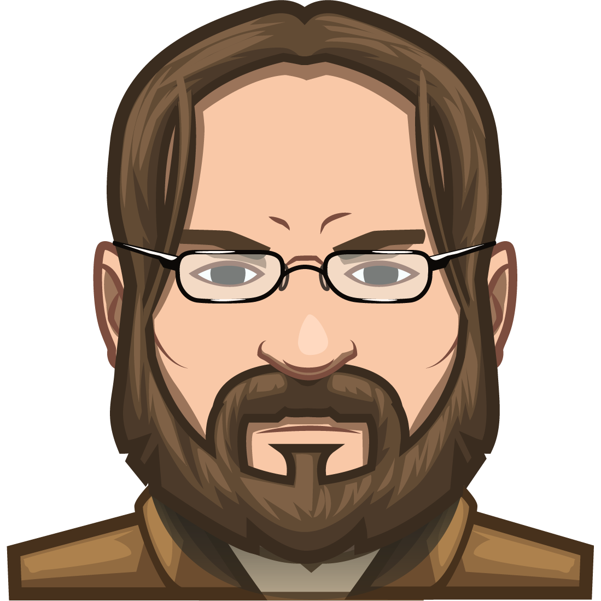
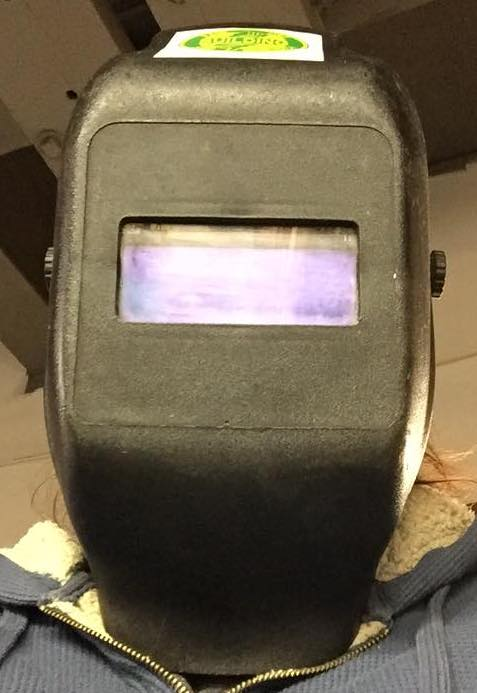

Why Avatars?
There are many reasons avatars may be used.
Some people like the anonymity they provide.
Some see them as masks or costumes and change them quite frequently.
Some use them as a show of support for a cause or a favorite media series.
Some like them because they let you showcase yourself in new ways!
Others like to explore different aspects of themselves, or experiment with ideas they're not ready to try in real life, such as exploring parts of their identity.
Some companies have custom avatars created for their staff, either to create a shared sense of community or to allow their staff to show off their own personalities.
And of course, some avatars are just for fun. There doesn't have to be a meaning behind it!
---
Here are a few of the avatars our assistant director, Maka Gradin has used over the last couple of decades.

At CodeCombat a photo of the employee and a description of what they wanted for an avatar was sent to a team of artists, who would often go through several iterations before landing on something the employee liked. They used avatars in the style of the art of their game, and this was created for Maka.

This avatar is a simple selfie I took while wearing a welding mask. I used it on a Discord server for Repl when customers asked me to upload an avatar. They later had a great deal of fun editing it and changing what was seen in the glass area of the mask.
At CodeCombat, Maka, as art director, worked with employees on getting a custom avatar that matched the art style of the game. Some immediately had ideas and made very specific requests such as showing support for a sports team, or dressing themselves as a character in a favorite game. Others had never thought about an avatar, shrugged, and asked me to come up with ideas.
The avatars had different meanings to each person and some became very attached to them. Maka came across an avatar he had created for a user at a cognitive science conference years after both had moved on to other work
Creating Your Own Avatar
If you'd like to create your own avatars, you can visit sites like the Stardew Valley Character Portrait maker, ReadyPlayer Me's, or search for more options using this free avatar creator search. Many of the generative AI tools can create avatars for you, some using photos you supply.
However, if you are, or know, an artist personally, you can create your own custom avatar limited only by your imagination and skill.